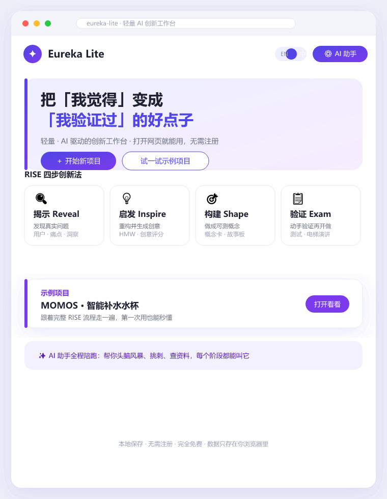
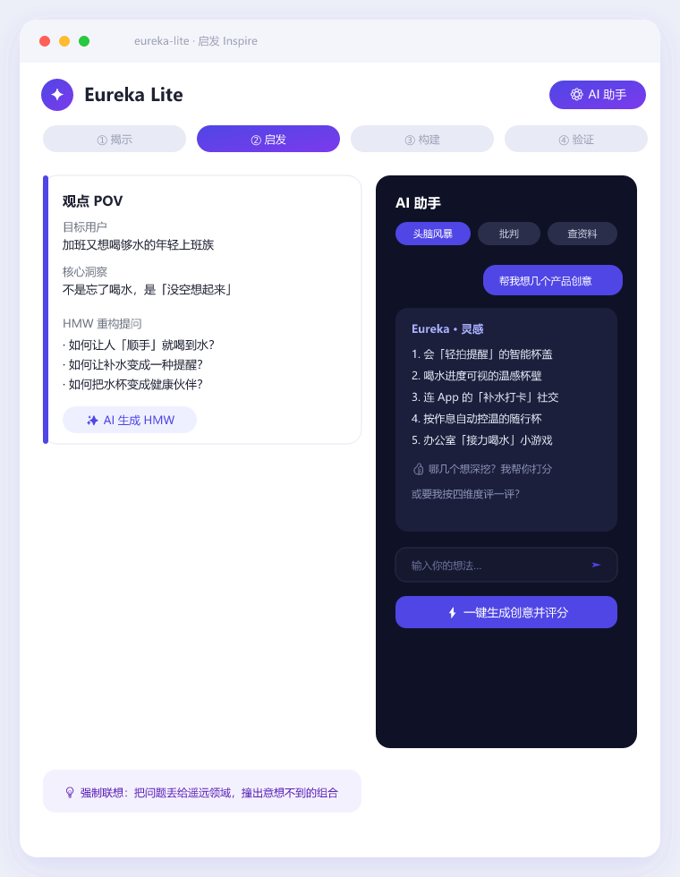
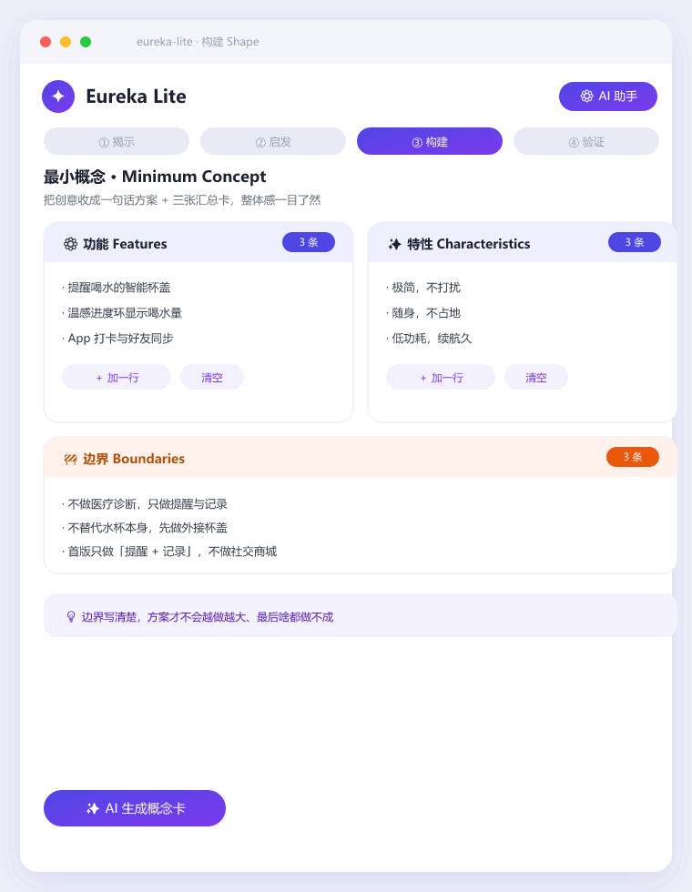
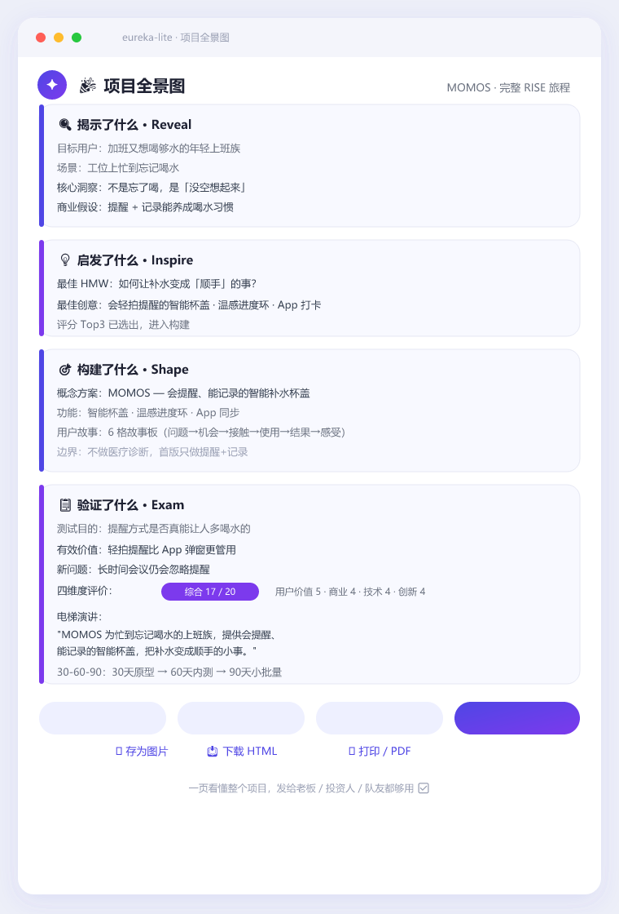

宝子们，今天必须按头安利一个我最近在用的宝藏工具——Eureka Lite 🫶
不知道你们有没有这种时刻：脑子里有个点子，兴奋得不行，但真要落地，就卡在「然后呢？」「这真的有人需要吗？」😵💫 以前我会在空白文档前发呆一整天。直到遇到它👇
✨ 它是什么？
一个跑在浏览器里的「轻量 AI 创新工作台」。不用下载、不用注册，打开网页就能用，数据还只存在你自己的浏览器里，隐私安全感拉满 🔒
🧭 它把「创新」拆成了 4 步（RISE 法）
🔍 揭示 Reveal：先搞清用户到底痛在哪
💡 启发 Inspire：换个角度提问，让 AI 帮你头脑风暴、挑刺、查资料
🎯 构建 Shape：把创意收成一张「最小概念卡」，功能 / 特性 / 边界一目了然
📋 验证 Exam：动手小测试 + 电梯演讲，验证过再开做

最戳我的是——每一步都有 AI 陪跑 🤖 三种模式：帮我头脑风暴 / 帮我批判 / 帮我查资料。卡壳了就叫它，比自己硬想快十倍。

🎁 第一次用也不慌
内置了一个完整示例项目「MOMOS 智能补水杯」，跟着走一遍，整套流程秒懂。走完还能生成一张「项目全景图」，发给老板、投资人、队友都够用 ✅

💡 适合谁？
· 想验证点子的创业者
· 要做用户研究的产物经理
· 教设计思维的老师
· 带工作坊的咨询师
· 以及每一个「我有个想法但不知道怎么开始」的打工人
免费、本地、隐私友好，这种良心工具真的不多了 🙏
👉 链接放评论区 / 直接搜 Eureka Lite 就能用
用过的小伙伴来评论区聊聊，你最想拿它验证什么点子？👇